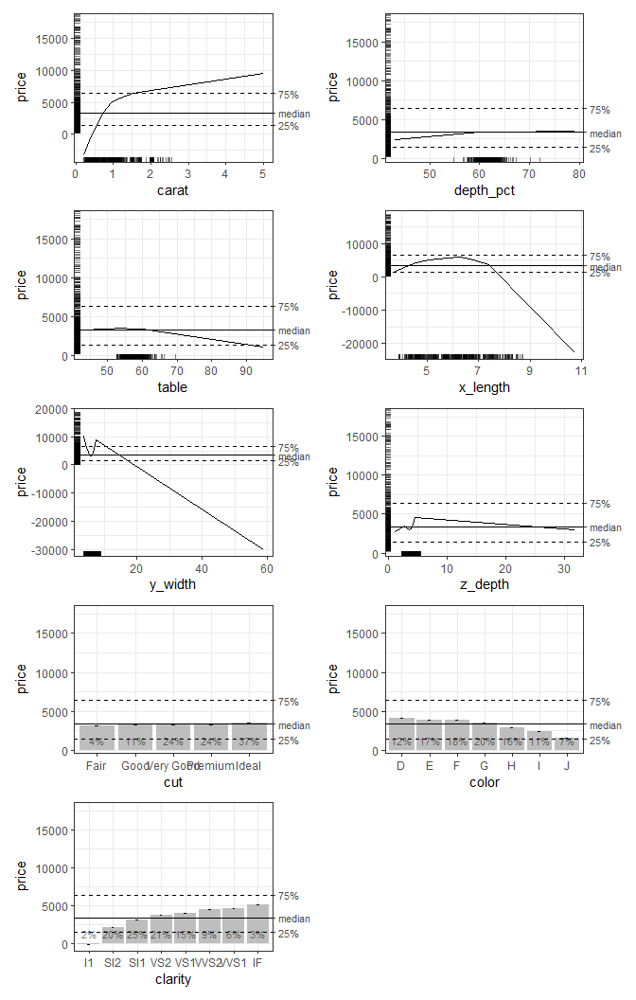

Accumulated Local Effects (ALE) were initially developed as a model-agnostic approach for global explanations of the results of black-box machine learning algorithms. ALE has two primary advantages over other approaches like partial dependency plots (PDP) and SHapley Additive exPlanations (SHAP): its values are not affected by the presence of interactions among variables in a model and its computation is relatively rapid. This package reimplements the algorithms for calculating ALE data and develops highly interpretable visualizations for plotting these ALE values. It also extends the original ALE concept to add bootstrap-based confidence intervals and ALE-based statistics that can be used for statistical inference.
For more details, see Okoli, Chitu. 2023. “Statistical Inference Using Machine Learning and Classical Techniques Based on Accumulated Local Effects (ALE).” arXiv. https://doi.org/10.48550/arXiv.2310.09877.
The ale package currently presents three main functions:
-
ale(): create data and plots for 1D ALE (single variables) and 2D ALE (two-way interactions). ALE values may be bootstrapped. -
model_bootstrap(): bootstrap an entire model, not just the ALE values. This function returns the bootstrapped model statistics and coefficients as well as the bootstrapped ALE values. This is the appropriate approach for small samples. -
create_p_dist(): create a distribution object for calculating the p-values for ALE statistics whenale()is called.
Documentation
You can obtain direct help for any of the package’s user-facing functions with the R help() function, e.g., help(ale). However, the most detailed documentation is found in the website for the most recent development version. There you can find several articles. We particularly recommend:
Installation
You can obtain the official releases from CRAN:
install.packages('ale')The CRAN releases are extensively tested and should have relatively few bugs. However, note that this package is still in beta stage. For the ale package, that means that there will occasionally be new features with changes in the function interface that might break the functionality of earlier versions. Please excuse us for this as we move towards a stable version that flexibly meets the needs of the broadest user base.
To get the most recent features, you can install the development version of ale from GitHub with:
# install.packages('pak')
pak::pak('tripartio/ale')The development version in the main branch of GitHub is always thoroughly checked. However, the documentation might not be fully up-to-date with the functionality.
There is one more optional but recommended setup option. To enable progress bars to see how long procedures will take, you should run the following code at the beginning of your R session:
# Run this in an R console; it will not work directly within an R Markdown or Quarto block
progressr::handlers(global = TRUE)
progressr::handlers('cli')The ale package will normally run this automatically for you the first time you execute a function from the package in an R session. To see how to configure this permanently, see help(ale).
Usage
We will give two demonstrations of how to use the package: first, a simple demonstration of ALE plots, and second, a more sophisticated demonstration suitable for statistical inference with p-values. For both demonstrations, we begin by fitting a GAM model. We assume that this is a final deployment model that needs to be fitted to the entire dataset.
library(ale)
# Sample 1000 rows from the ggplot2::diamonds dataset (for a simple example).
set.seed(0)
diamonds_sample <- ggplot2::diamonds[sample(nrow(ggplot2::diamonds), 1000), ]
# Create a GAM model with flexible curves to predict diamond price
# Smooth all numeric variables and include all other variables
# Build model on training data, not on the full dataset.
gam_diamonds <- mgcv::gam(
price ~ s(carat) + s(depth) + s(table) + s(x) + s(y) + s(z) +
cut + color + clarity,
data = diamonds_sample
)Simple demonstration
For the simple demonstration, we directly create ALE data with the ale() function and then plot the ggplot plot objects.
# Create ALE data
ale_gam_diamonds <- ale(diamonds_sample, gam_diamonds)
# Plot the ALE data
diamonds_plots <- plot(ale_gam_diamonds)
diamonds_1D_plots <- diamonds_plots$distinct$price$plots[[1]]
patchwork::wrap_plots(diamonds_1D_plots, ncol = 2)
For an explanation of these basic features, see the introductory vignette.
Statistical inference with ALE
The statistical functionality of the ale package is rather slow because it typically involves 100 bootstrap iterations and sometimes a 1,000 random simulations. Even though most functions in the package implement parallel processing by default, such procedures still take some time. So, this statistical demonstration gives you downloadable objects for a rapid demonstration.
First, we need to create a p-value distribution object so that the ALE statistics can be properly distinguished from random effects.
# Create p_value distribution object
# # To generate the code, uncomment the following lines.
# # But it is slow because it retrains the model 100 times, so this vignette loads a pre-created p_value distribution object.
# gam_diamonds_p_readme <- create_p_dist(
# diamonds_sample, gam_diamonds,
# 'precise slow',
# # Normally should be default 1000, but just 100 for quicker demo
# rand_it = 100
# )
# saveRDS(gam_diamonds_p_readme, file.choose())
gam_diamonds_p_readme <-
url('https://github.com/tripartio/ale/raw/main/download/gam_diamonds_p_readme.rds') |>
readRDS()Now we can create bootstrapped ALE data and see some of the differences in the plots of bootstrapped ALE with p-values:
# Create ALE data
# # To generate the code, uncomment the following lines.
# # But it is slow because it bootstraps the ALE data 100 times, so this vignette loads a pre-created ALE object.
# ale_gam_diamonds_stats_readme <- ale(
# diamonds_sample, gam_diamonds,
# p_values = gam_diamonds_p_readme,
# boot_it = 100
# )
# saveRDS(ale_gam_diamonds_stats_readme, file.choose())
ale_gam_diamonds_stats_readme <-
url('https://github.com/tripartio/ale/raw/main/download/ale_gam_diamonds_stats_readme.rds') |>
readRDS()
# Plot the ALE data
diamonds_stats_plots <- plot(ale_gam_diamonds_stats_readme)
diamonds_stats_1D_plots <- diamonds_stats_plots$distinct$price$plots[[1]]
patchwork::wrap_plots(diamonds_stats_1D_plots, ncol = 2)
For a detailed explanation of how to interpret these plots, see the vignette on ALE-based statistics for statistical inference and effect sizes.
Getting help
If you find a bug, please report it on GitHub. If you have a question about how to use the package, you can post it on Stack Overflow with the “ale” tag. I will follow that tag, so I will try my best to respond quickly. However, be sure to always include a minimal reproducible example for your usage requests. If you cannot include your own dataset in the question, then use one of the built-in datasets to frame your help request: var_cars or census. You may also use ggplot2::diamonds for a larger sample.